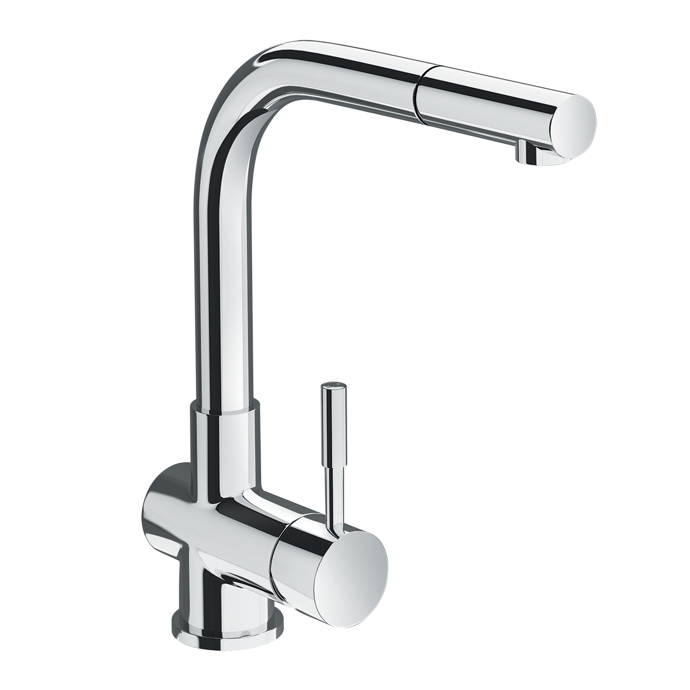
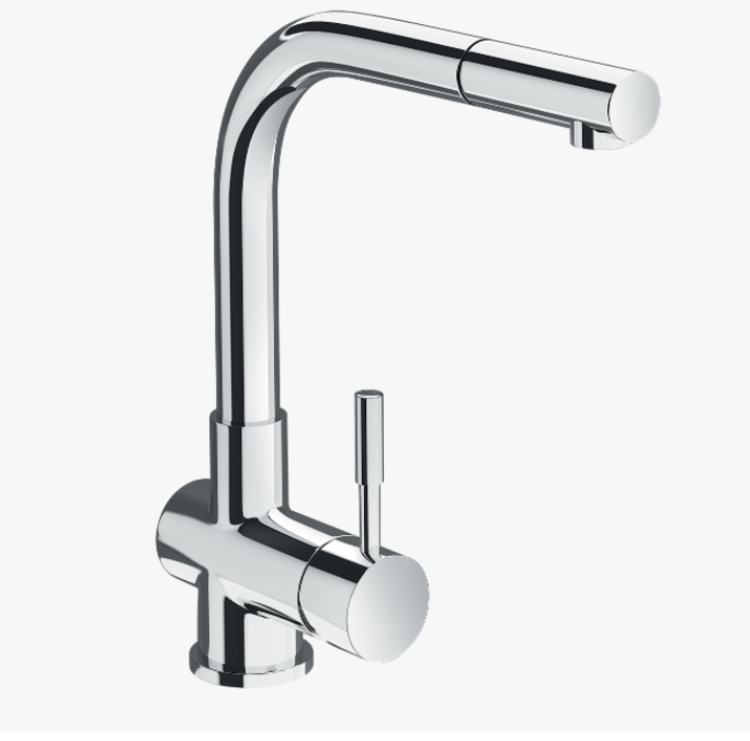
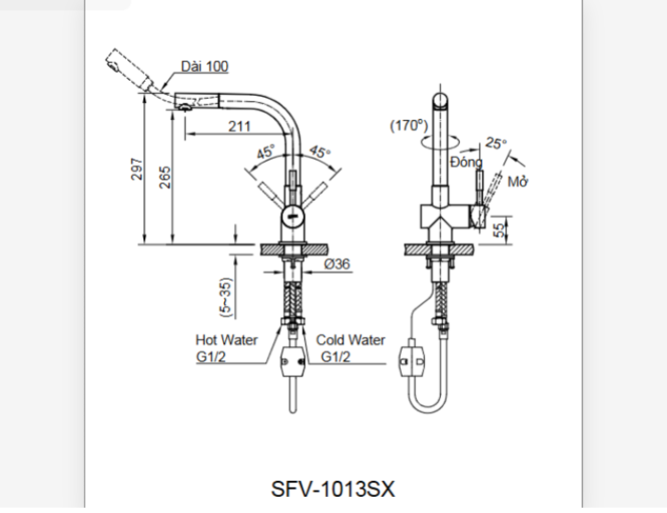

Thương hiệu INAX mang đến vòi bếp SFV-1013SX - mẫu vòi đa năng hội tụ cả tính thẩm mỹ lẫn công năng vượt trội. Với thiết kế dạng chữ L, đầu vòi rút linh hoạt cùng nhiều tính năng tiện ích, sản phẩm chắc chắn sẽ là “trợ thủ” đắc lực cho các gia đình trong việc chế biến và vệ sinh thực phẩm. Đặc điểm nổi bật của vòi chậu rửa bếp SFV-1013SXThiết kế hiện đại, tối ưu cho không gian bếpKiểu dáng chữ L cao thoáng, giúp tạo nhiều khoảng trống dưới vòi, dễ dàng rửa xoong, nồi, khay nướng hoặc vật dụng cỡ lớn.Đầu vòi có thể kéo rút linh hoạt, hỗ trợ phun nước tới từng vị trí trong bồn rửa chén, rất hữu ích khi cần vệ sinh rau củ hoặc làm sạch các góc khó tiếp cận.Cơ chế xoay giữa hai bồn rửa mang đến sự tiện lợi, giúp việc sơ chế và rửa dọn trở nên nhanh chóng, tiết kiệm thời gian.Chất liệu cao cấp, an toàn cho người dùngSFV-1013SX được làm từ đồng thau nguyên khối – chất liệu nổi tiếng với khả năng chống ăn mòn, đồng thời không gây nhiễm khuẩn cho nguồn nước.Bề mặt được phủ Crom-Niken sáng bóng, giữ vẻ ngoài sang trọng, hạn chế trầy xước và gỉ sét trong quá trình sử dụng lâu dài.Van sứ chống rò rỉ có độ bền vượt trội, duy trì hiệu quả hoạt động ổn định ngay cả sau nhiều năm.Trải nghiệm sử dụng tiện lợiVòi bếp SFV-1013SX có tay gạt vận hành êm ái, chỉ cần một thao tác nhẹ là nước đã chảy ổn định, dễ điều chỉnh theo nhu cầu.Sản phẩm được trang bị công nghệ phun bọt chống bắn giúp dòng nước êm dịu, tiết kiệm nước mà vẫn đảm bảo hiệu quả làm sạch.Khả năng chịu được áp lực nước từ 0.07 – 0.75 MPa, thích hợp với nhiều hệ thống cấp nước ở đô thị lẫn nông thôn.Độ bền vượt trội, chi phí hợp lýSFV-1013SX có tuổi thọ 10 năm, giảm thiểu tối đa tình trạng hỏng hóc hay rò rỉ thường gặp ở các loại vòi kém chất lượng. Sản phẩm được xem là “chiếc vòi đa năng” nhưng giá thành lại rất tiết kiệm, phù hợp với nhiều phân khúc khách hàng, từ hộ gia đình nhỏ đến căn hộ cao cấp.Bản vẽ Vòi bếp SFV-1013SXThông số kỹ thuậtTên sản phẩmVòi bếp SFV-1013SXDạngVòi bếp đa năngChất liệu- Van điều khiển bằng sứ có độ bền cao, chống rò rỉ nước - Chất liệu đồng thau không gây nhiễm khuẩn cho nước - Mạ Crom-NikenKích thước105 x 265mm (Cao x Rộng)Tính năng- Tay gạt êm ái, giúp nước nhanh chóng chảy ra và dễ dàng điều chỉnh nhiệt. - Tuổi thọ trên 10 năm. - Phun bọt chống bắn. - Giá thành tiết kiệm. - Chịu được áp lực nước 0.07 - 0.75 MPaThương hiệuINAXThiết kế- Dạng dạng chữ L tạo ra nhiều không gian hơn, có thể rửa những thứ to như nồi, bếp. - Đầu vòi có thể rút ra, dễ dàng phun nước tới từng ngóc ngách trong bồn rửa. - Có thể xoay dễ dàng giữa 2 bồn rửa.Khác- Hotline tư vấn và bảo hành: 18006633
Vòi bếp SFV-1013SX
Vòi bếp thương hiệu INAX.
Đã cập nhật danh sách yêu thích.
DANH MỤC: Vòi bếp
MÃ SẢN PHẨM: SFV-1013SX
DEPTH: 0mm
HEIGHT: 105mm
WIDTH: 265mm
Thương hiệu INAX mang đến vòi bếp SFV-1013SX - mẫu vòi đa năng hội tụ cả tính thẩm mỹ lẫn công năng vượt trội. Với thiết kế dạng chữ L, đầu vòi rút linh hoạt cùng nhiều tính năng tiện ích, sản phẩm chắc chắn sẽ là “trợ thủ” đắc lực cho các gia đình trong việc chế biến và vệ sinh thực phẩm. Đặc điểm nổi bật của vòi chậu rửa bếp SFV-1013SXThiết kế hiện đại, tối ưu cho không gian bếpKiểu dáng chữ L cao thoáng, giúp tạo nhiều khoảng trống dưới vòi, dễ dàng rửa xoong, nồi, khay nướng hoặc vật dụng cỡ lớn.Đầu vòi có thể kéo rút linh hoạt, hỗ trợ phun nước tới từng vị trí trong bồn rửa chén, rất hữu ích khi cần vệ sinh rau củ hoặc làm sạch các góc khó tiếp cận.Cơ chế xoay giữa hai bồn rửa mang đến sự tiện lợi, giúp việc sơ chế và rửa dọn trở nên nhanh chóng, tiết kiệm thời gian.Chất liệu cao cấp, an toàn cho người dùngSFV-1013SX được làm từ đồng thau nguyên khối – chất liệu nổi tiếng với khả năng chống ăn mòn, đồng thời không gây nhiễm khuẩn cho nguồn nước.Bề mặt được phủ Crom-Niken sáng bóng, giữ vẻ ngoài sang trọng, hạn chế trầy xước và gỉ sét trong quá trình sử dụng lâu dài.Van sứ chống rò rỉ có độ bền vượt trội, duy trì hiệu quả hoạt động ổn định ngay cả sau nhiều năm.Trải nghiệm sử dụng tiện lợiVòi bếp SFV-1013SX có tay gạt vận hành êm ái, chỉ cần một thao tác nhẹ là nước đã chảy ổn định, dễ điều chỉnh theo nhu cầu.Sản phẩm được trang bị công nghệ phun bọt chống bắn giúp dòng nước êm dịu, tiết kiệm nước mà vẫn đảm bảo hiệu quả làm sạch.Khả năng chịu được áp lực nước từ 0.07 – 0.75 MPa, thích hợp với nhiều hệ thống cấp nước ở đô thị lẫn nông thôn.Độ bền vượt trội, chi phí hợp lýSFV-1013SX có tuổi thọ 10 năm, giảm thiểu tối đa tình trạng hỏng hóc hay rò rỉ thường gặp ở các loại vòi kém chất lượng. Sản phẩm được xem là “chiếc vòi đa năng” nhưng giá thành lại rất tiết kiệm, phù hợp với nhiều phân khúc khách hàng, từ hộ gia đình nhỏ đến căn hộ cao cấp.Bản vẽ Vòi bếp SFV-1013SXThông số kỹ thuậtTên sản phẩmVòi bếp SFV-1013SXDạngVòi bếp đa năngChất liệu- Van điều khiển bằng sứ có độ bền cao, chống rò rỉ nước - Chất liệu đồng thau không gây nhiễm khuẩn cho nước - Mạ Crom-NikenKích thước105 x 265mm (Cao x Rộng)Tính năng- Tay gạt êm ái, giúp nước nhanh chóng chảy ra và dễ dàng điều chỉnh nhiệt. - Tuổi thọ trên 10 năm. - Phun bọt chống bắn. - Giá thành tiết kiệm. - Chịu được áp lực nước 0.07 - 0.75 MPaThương hiệuINAXThiết kế- Dạng dạng chữ L tạo ra nhiều không gian hơn, có thể rửa những thứ to như nồi, bếp. - Đầu vòi có thể rút ra, dễ dàng phun nước tới từng ngóc ngách trong bồn rửa. - Có thể xoay dễ dàng giữa 2 bồn rửa.Khác- Hotline tư vấn và bảo hành: 18006633
DANH MỤC: Vòi bếp
MÃ SẢN PHẨM: SFV-1013SX
DEPTH: 0mm
HEIGHT: 105mm
WIDTH: 265mm